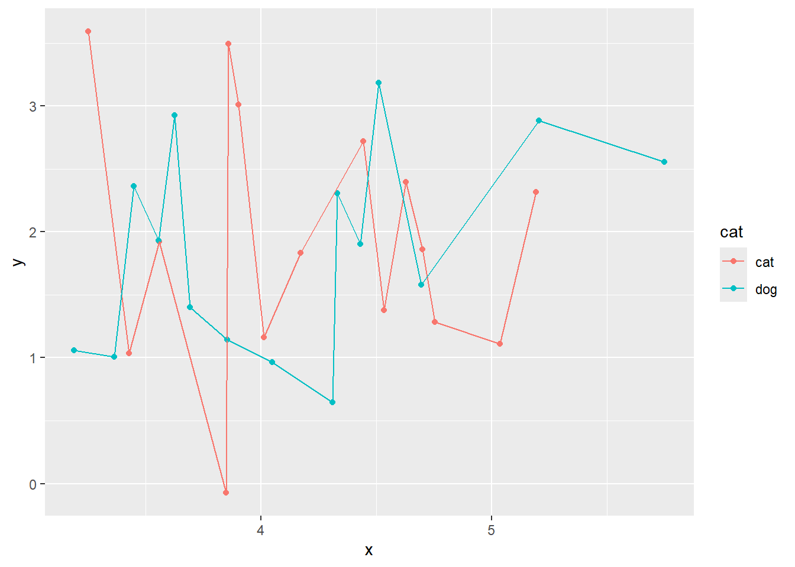
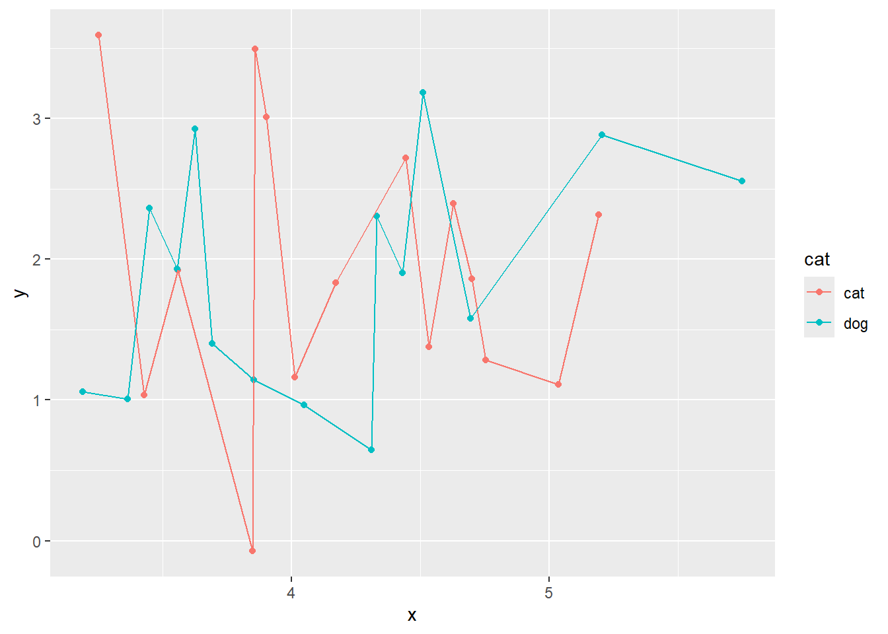

We can add JS files by calling them in either an “=HTML” block in the body, by putting that code in an HTML file and calling on that file, or by putting the files or code to call the files in the Quarto YAML.
Click to change the website background (JS new_color test)

Example using the IEAnalyzeR interactive plot function